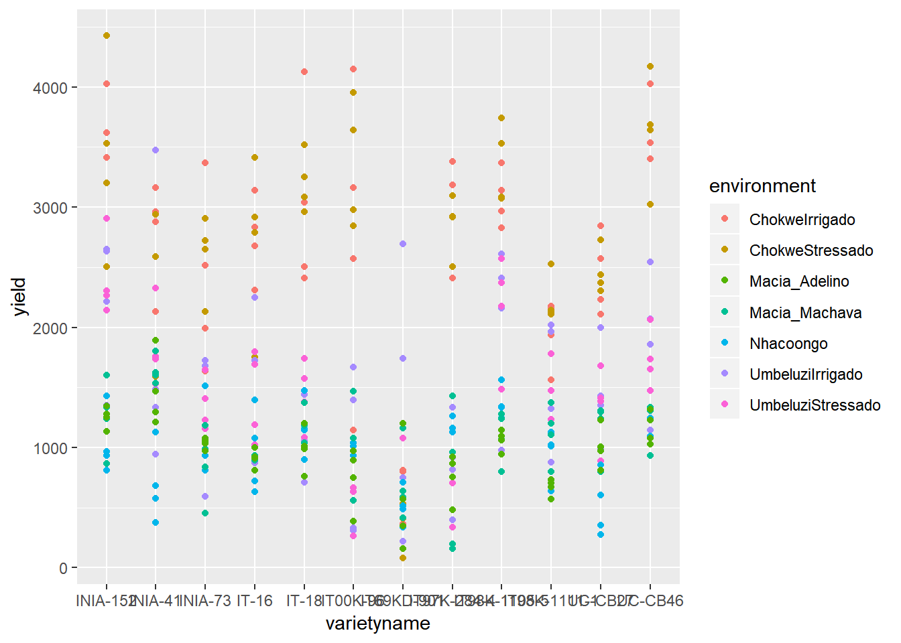
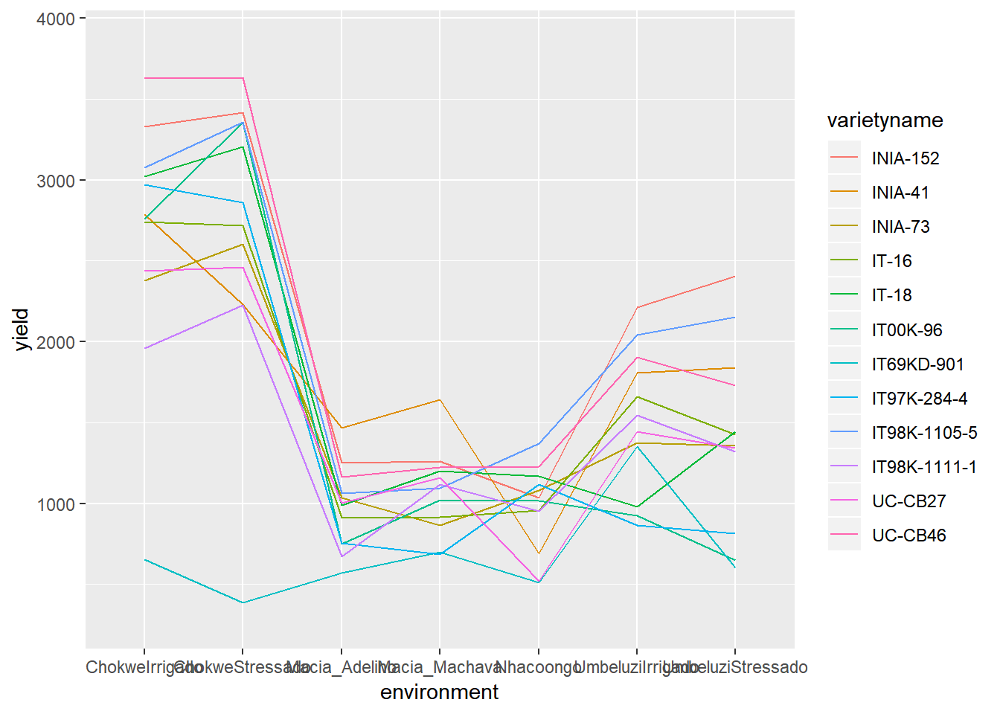
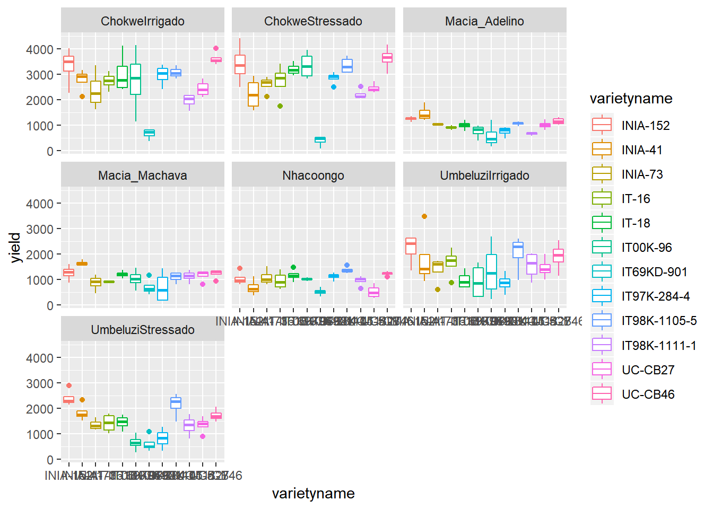
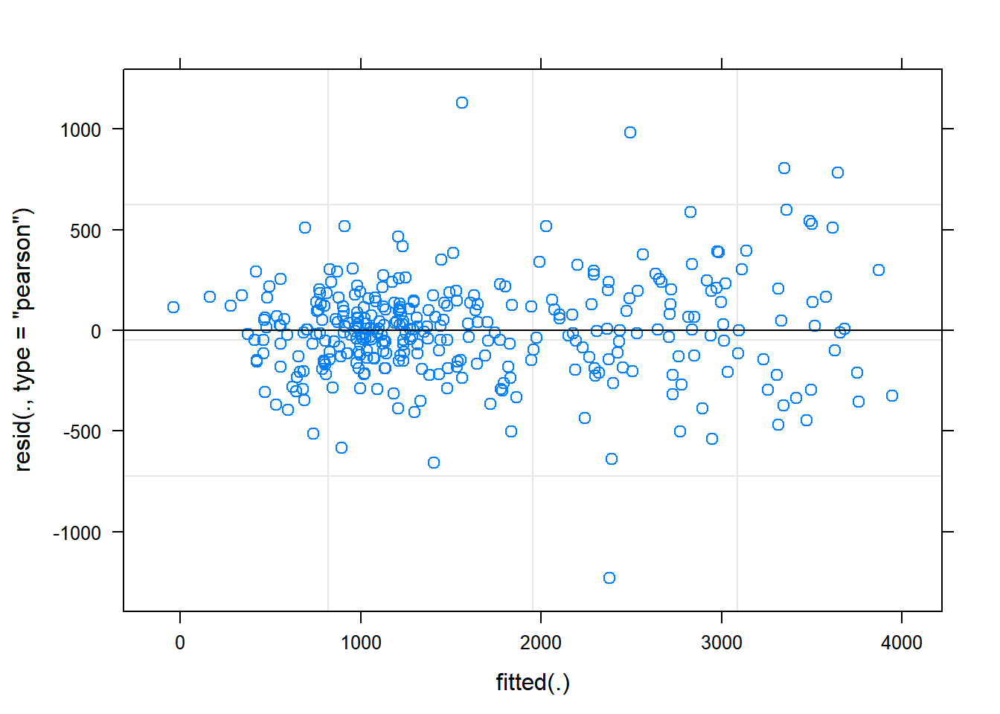
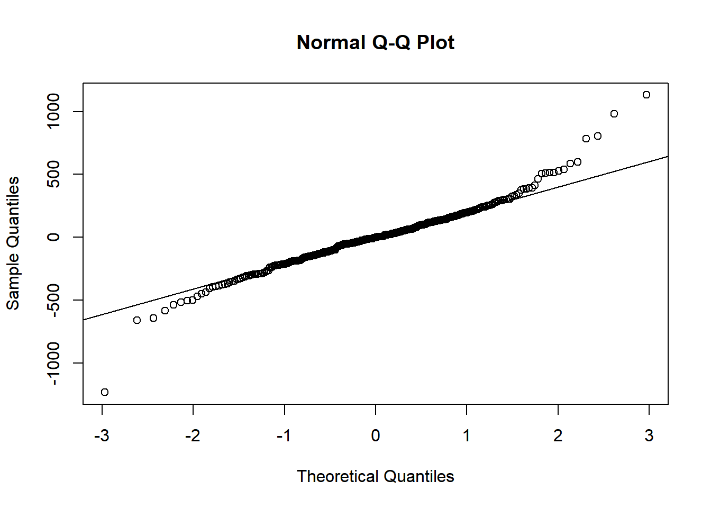
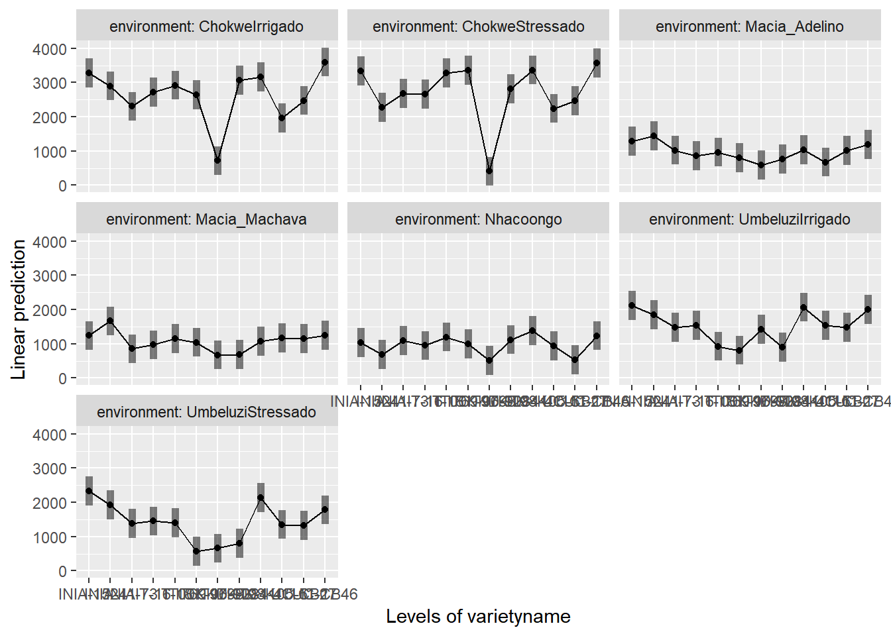
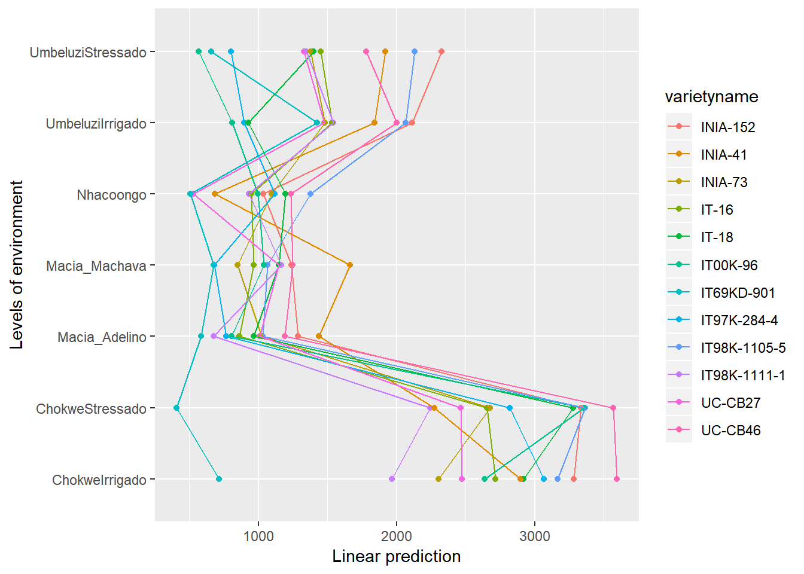

Chapter 7 Multi-Environment Trial Analysis
7.1 Section 1: Steps in analysis using R
- Install R packages needed
library(ggplot2)
library(emmeans)
library(doBy)
library(lmerTest)
library(multcompView)- Import data
vartrial <- read.csv("C:/Users/Admin/Desktop/mozvartrial.csv")- Check and update data
summary(vartrial)
str(vartrial)
vartrial$variety<-factor(vartrial$variety)
vartrial$trial<-factor(vartrial$trial)- Explore data
ggplot(data=vartrial,aes(y=yield,x=varietyname)) +
geom_point(aes(colour=environment))
ggplot(data=vartrial,aes(y=yield,x=environment,colour=varietyname,group=varietyname)) +
stat_summary(geom="line")
ggplot(data=vartrial,aes(y=yield,x=varietyname))+
geom_boxplot(aes(colour=varietyname))+facet_wrap(~environment)
summaryBy(yield~varietyname+environment, data=vartrial, FUN=c(mean,median,sd))- Specify a model for data
gxemodel1<-lmer(yield~varietyname*environment+(1|rep:environment), data=vartrial)
gxemodel2<-lmer(yield~varietyname*environment+(1|rep:environment)+(1|rep:environment:row)+(1|rep:environment:column), data=vartrial)
anova(gxemodel2,gxemodel1)- Check the model
plot(gxemodel2)
qqnorm(resid(gxemodel2))
qqline(resid(gxemodel2))- Interpret the model
anova(gxemodel2, ddf="Kenward-Roger")
print(VarCorr(gxemodel2), comp=("Variance"))
ranova(gxemodel2)- Present the results from the model
emmip(gxemodel2,~varietyname|environment,CIs = TRUE)
emmip(gxemodel2,~varietyname|environment,CIs = TRUE)
emmip(gxemodel2,varietyname~environment)+coord_flip()
emmeans(gxemodel2, ~varietyname|environment)
cld(emmeans(gxemodel2, ~varietyname|environment))
estimatedmeans<-data.frame(cld(emmeans(gxemodel2, ~varietyname|environment)))
estimatedmeans
library(reshape2)
dcast(varietyname~environment,value.var="emmean",data=estimatedmeans)7.2 Section 2: Explanation of Steps
7.2.1 1. Install R packages needed
A number of packages following packages were used during data exploration and analysis. For a general introduction explaining what R packages are and how they work, this is a really useful guide https://www.datacamp.com/community/tutorials/r-packages-guide. For each of these packages to be installed, using install.packages(), this requires a reliable internet connection and a correctly installed version of R and RStudio. If you are having difficulties installing these packages please ask for help.
install.packages("ggplot2")
library(ggplot2)ggplot2 This package provides a powerful graphics language for creating elegant and complex graphs in R.
install.packages("emmeans")
library(emmeans)emmeans Estimated marginal means (also known as least squares means) helps provide expected mean values and confidence intervals from statistical models.
install.packages("doBy")
library(doBy)doByAllows easy production of summary statistic tables
install.packages("lmerTest")
library(lmerTest)lmerTest Allows produce of flexible mixed effects regression models, similar to REML in Genstat.
install.packages("multcompView")
library(multcompView)multcompView allows for mean seperation methods on analyses
7.2.2 2. Import data
Our data set saved as a CSV file, so we can use the read.csv commmand to import the data. We are going to assign the name of the data with R to be fallow2. Remember in R Studio you could also use the “Import Dataset” menu to import a dataset.
vartrial <- read.csv("C:/Users/Admin/Desktop/mozvartrial.csv")7.2.3 3. Check and update data
When reading data into R it is always useful to check that data is in the format expected. How many variables are there? How many rows? How have the columns been read in? The summary command can help to show if the data is being treated correctly.
summary(vartrial)## order environment trial rep
## Min. : 1.00 ChokweIrrigado :48 Min. :1 Min. :1.00
## 1st Qu.: 84.75 ChokweStressado :48 1st Qu.:2 1st Qu.:1.75
## Median :168.50 Macia_Adelino :48 Median :4 Median :2.50
## Mean :168.50 Macia_Machava :48 Mean :4 Mean :2.50
## 3rd Qu.:252.25 Nhacoongo :48 3rd Qu.:6 3rd Qu.:3.25
## Max. :336.00 UmbeluziIrrigado :48 Max. :7 Max. :4.00
## UmbeluziStressado:48
## row column variety varietyname
## Min. :1.000 Min. :1 Min. : 1.00 INIA-152: 28
## 1st Qu.:2.000 1st Qu.:1 1st Qu.: 3.75 INIA-41 : 28
## Median :2.500 Median :2 Median : 6.50 INIA-73 : 28
## Mean :2.503 Mean :2 Mean : 6.50 IT-16 : 28
## 3rd Qu.:3.250 3rd Qu.:3 3rd Qu.: 9.25 IT-18 : 28
## Max. :4.000 Max. :3 Max. :12.00 IT00K-96: 28
## (Other) :168
## plantnum yield
## Min. : 4.00 Min. : 78.2
## 1st Qu.: 27.00 1st Qu.: 933.3
## Median : 44.00 Median :1322.2
## Mean : 50.90 Mean :1613.9
## 3rd Qu.: 69.25 3rd Qu.:2253.3
## Max. :141.00 Max. :4426.7
## Where data is being treated as a numeric variable (i.e. a number) summary provides statistics like the mean, min and max. Where data is being treated like a categorical variable (i.e. a group) then summary provides frequency tables.
From the results we can see that the variables rep and plot are being considered as numeric variables. However these are grouping variables, not number variables, the numbers used are simply codes. If we do not rectify this then our analysis later will be incorrect and meaningless.
This can also be seen more explicitly using the str() function.
str(vartrial)## 'data.frame': 336 obs. of 10 variables:
## $ order : int 1 2 3 4 5 6 7 8 9 10 ...
## $ environment: Factor w/ 7 levels "ChokweIrrigado",..: 1 1 1 1 1 1 1 1 1 1 ...
## $ trial : int 1 1 1 1 1 1 1 1 1 1 ...
## $ rep : int 1 1 1 1 1 1 1 1 1 1 ...
## $ row : int 1 1 1 2 2 2 3 3 3 4 ...
## $ column : int 1 2 3 3 2 1 1 2 3 3 ...
## $ variety : int 1 2 3 4 5 6 7 8 9 10 ...
## $ varietyname: Factor w/ 12 levels "INIA-152","INIA-41",..: 12 7 3 11 5 9 6 2 8 4 ...
## $ plantnum : int 66 97 77 83 112 106 127 70 128 96 ...
## $ yield : num 3404 640 2516 2844 3040 ...So we need to convert these variables into factors.
vartrial$variety<-factor(vartrial$variety)
vartrial$trial<-factor(vartrial$trial)These commands take the column rep within the data frame fallow, converts into a factor and saves the result in a column called rep within fallow.
7.2.4 4. Explore data
7.2.4.1 Plots
We are now interesting in assessing the relationship between yield and striga - so we want to produce a plot of striga against yield, with different coloured points denoting each treatment.
ggplot(data=vartrial,aes(y=yield,x=varietyname)) +
geom_point(aes(colour=environment)) We can see from the distribution of striga that there are some farms with very high levels of striga, and some farms with no striga. The big range of values makes it hard to make interpretations from this plot, so taking a square root transformation may help to visualise the relationship. A log transformation will not help here because of the large number of 0 values of striga.
ggplot(data=vartrial,aes(y=yield,x=environment,colour=varietyname,group=varietyname)) +
stat_summary(geom="line")## No summary function supplied, defaulting to `mean_se()
ggplot(data=vartrial,aes(y=yield,x=varietyname))+
geom_boxplot(aes(colour=varietyname))+facet_wrap(~environment)
7.2.4.2 Summary Statistics
To produce summary statistics, by group, there are many options within R. One option is to use the summaryBy function, from the doBy library. The code used for this is quite similar to the code we will use to produce models in a later step.
summaryBy(yield~varietyname+environment, data=vartrial, FUN=c(mean,median,sd))## varietyname environment yield.mean yield.median yield.sd
## 1 INIA-152 ChokweIrrigado 3331.125 3515.55 754.04696
## 2 INIA-152 ChokweStressado 3415.575 3364.45 797.44230
## 3 INIA-152 Macia_Adelino 1253.325 1266.65 89.13744
## 4 INIA-152 Macia_Machava 1260.000 1286.65 303.34677
## 5 INIA-152 Nhacoongo 1035.550 951.10 272.47465
## 6 INIA-152 UmbeluziIrrigado 2211.100 2422.20 607.63851
## 7 INIA-152 UmbeluziStressado 2404.450 2284.45 341.78953
## 8 INIA-41 ChokweIrrigado 2784.425 2920.00 450.29839
## 9 INIA-41 ChokweStressado 2231.100 2195.55 638.69332
## 10 INIA-41 Macia_Adelino 1466.650 1380.00 303.46151
## 11 INIA-41 Macia_Machava 1640.000 1613.35 113.66879
## 12 INIA-41 Nhacoongo 691.100 631.10 319.13814
## 13 INIA-41 UmbeluziIrrigado 1808.875 1408.85 1134.39461
## 14 INIA-41 UmbeluziStressado 1837.775 1746.65 343.30332
## 15 INIA-73 ChokweIrrigado 2377.800 2253.35 753.14137
## 16 INIA-73 ChokweStressado 2602.225 2684.45 330.98096
## 17 INIA-73 Macia_Adelino 1035.550 1044.45 45.33553
## 18 INIA-73 Macia_Machava 866.675 913.35 310.06045
## 19 INIA-73 Nhacoongo 1080.000 1000.00 306.07200
## 20 INIA-73 UmbeluziIrrigado 1377.775 1595.55 529.48470
## 21 INIA-73 UmbeluziStressado 1357.775 1315.55 217.85558
## 22 IT-16 ChokweIrrigado 2740.025 2755.60 344.23188
## 23 IT-16 ChokweStressado 2717.775 2853.35 698.26615
## 24 IT-16 Macia_Adelino 911.100 915.55 76.47932
## 25 IT-16 Macia_Machava 916.650 920.00 19.98891
## 26 IT-16 Nhacoongo 955.575 897.80 350.62212
## 27 IT-16 UmbeluziIrrigado 1660.000 1760.00 574.94960
## 28 IT-16 UmbeluziStressado 1424.450 1440.00 375.91817
## 29 IT-18 ChokweIrrigado 3020.000 2773.35 786.76965
## 30 IT-18 ChokweStressado 3204.425 3168.85 242.29866
## 31 IT-18 Macia_Adelino 991.100 1002.20 180.31386
## 32 IT-18 Macia_Machava 1200.000 1193.35 136.39377
## 33 IT-18 Nhacoongo 1168.925 1151.15 236.80500
## 34 IT-18 UmbeluziIrrigado 980.000 884.45 347.49929
## 35 IT-18 UmbeluziStressado 1444.425 1475.55 282.45094
## 36 IT00K-96 ChokweIrrigado 2757.775 2866.65 1256.70666
## 37 IT00K-96 ChokweStressado 3355.550 3311.10 531.49591
## 38 IT00K-96 Macia_Adelino 751.100 822.20 259.73130
## 39 IT00K-96 Macia_Machava 1020.000 1026.65 372.79207
## 40 IT00K-96 Nhacoongo 1015.550 1026.65 60.48121
## 41 IT00K-96 UmbeluziIrrigado 926.675 862.25 709.53665
## 42 IT00K-96 UmbeluziStressado 651.125 648.90 316.04321
## 43 IT69KD-901 ChokweIrrigado 653.325 720.00 207.66347
## 44 IT69KD-901 ChokweStressado 386.200 466.65 213.00778
## 45 IT69KD-901 Macia_Adelino 568.900 457.80 452.71745
## 46 IT69KD-901 Macia_Machava 700.000 613.35 321.57621
## 47 IT69KD-901 Nhacoongo 513.350 502.25 153.32507
## 48 IT69KD-901 UmbeluziIrrigado 1351.100 1244.45 1094.55845
## 49 IT69KD-901 UmbeluziStressado 604.475 502.25 323.69258
## 50 IT97K-284-4 ChokweIrrigado 2971.125 3048.90 419.96714
## 51 IT97K-284-4 ChokweStressado 2860.000 2920.00 249.32475
## 52 IT97K-284-4 Macia_Adelino 755.575 811.15 196.06625
## 53 IT97K-284-4 Macia_Machava 686.675 580.00 615.51677
## 54 IT97K-284-4 Nhacoongo 1119.975 1146.65 142.04549
## 55 IT97K-284-4 UmbeluziIrrigado 866.675 866.70 383.10437
## 56 IT97K-284-4 UmbeluziStressado 815.550 831.10 392.19694
## 57 IT98K-1105-5 ChokweIrrigado 3075.575 3053.35 233.25939
## 58 IT98K-1105-5 ChokweStressado 3357.775 3306.65 332.37678
## 59 IT98K-1105-5 Macia_Adelino 1062.225 1077.75 84.55315
## 60 IT98K-1105-5 Macia_Machava 1096.675 1153.35 218.37633
## 61 IT98K-1105-5 Nhacoongo 1371.075 1337.75 136.23733
## 62 IT98K-1105-5 UmbeluziIrrigado 2040.000 2284.45 731.99020
## 63 IT98K-1105-5 UmbeluziStressado 2151.100 2275.55 472.27515
## 64 IT98K-1111-1 ChokweIrrigado 1960.000 2048.90 285.44062
## 65 IT98K-1111-1 ChokweStressado 2224.425 2133.30 200.50779
## 66 IT98K-1111-1 Macia_Adelino 671.100 688.90 70.00248
## 67 IT98K-1111-1 Macia_Machava 1120.000 1153.35 240.23445
## 68 IT98K-1111-1 Nhacoongo 951.100 1017.75 213.94711
## 69 IT98K-1111-1 UmbeluziIrrigado 1546.650 1644.40 544.76743
## 70 IT98K-1111-1 UmbeluziStressado 1322.250 1355.60 412.83383
## 71 UC-CB27 ChokweIrrigado 2437.775 2400.00 334.09723
## 72 UC-CB27 ChokweStressado 2460.000 2404.45 187.36800
## 73 UC-CB27 Macia_Adelino 1004.425 988.85 170.19960
## 74 UC-CB27 Macia_Machava 1160.000 1266.65 241.72283
## 75 UC-CB27 Nhacoongo 522.225 480.00 261.37532
## 76 UC-CB27 UmbeluziIrrigado 1444.450 1391.10 415.93051
## 77 UC-CB27 UmbeluziStressado 1342.225 1400.00 329.96221
## 78 UC-CB46 ChokweIrrigado 3626.675 3537.80 273.99739
## 79 UC-CB46 ChokweStressado 3631.100 3666.65 470.28565
## 80 UC-CB46 Macia_Adelino 1163.350 1153.35 134.37868
## 81 UC-CB46 Macia_Machava 1223.325 1313.35 193.65472
## 82 UC-CB46 Nhacoongo 1228.850 1244.40 99.61126
## 83 UC-CB46 UmbeluziIrrigado 1904.450 1964.45 580.47640
## 84 UC-CB46 UmbeluziStressado 1731.100 1693.30 245.604797.2.5 5. Specify a model for data
In this design, an RCBD, we have one treatment factor, “treat”, and one layout factor “rep”. More information about model fitting can be found in section 2.
gxemodel1<-lmer(yield~varietyname*environment+(1|rep:environment), data=vartrial)
gxemodel2<-lmer(yield~varietyname*environment+(1|rep:environment)+(1|rep:environment:row)+(1|rep:environment:column), data=vartrial)
anova(gxemodel2,gxemodel1)## refitting model(s) with ML (instead of REML)## Data: vartrial
## Models:
## gxemodel1: yield ~ varietyname * environment + (1 | rep:environment)
## gxemodel2: yield ~ varietyname * environment + (1 | rep:environment) + (1 |
## gxemodel2: rep:environment:row) + (1 | rep:environment:column)
## Df AIC BIC logLik deviance Chisq Chi Df Pr(>Chisq)
## gxemodel1 86 5042.2 5370.5 -2435.1 4870.2
## gxemodel2 88 5025.2 5361.1 -2424.6 4849.2 20.977 2 2.785e-05 ***
## ---
## Signif. codes: 0 '***' 0.001 '**' 0.01 '*' 0.05 '.' 0.1 ' ' 1R is unlike many other software packages in how it fits models. The best way of handling models in R is to assign the model to a name (in this case rcbdmodel1) and then ask R to provide different sorts of output for this model. When you run the above line you will get now output from the data - this is what we expected to see!
7.2.6 6. Check the model
Before interpretting the model any further we should investigate the model validity, to ensure any conclusions we draw are valid. There are 3 assumptions that we can check for using standard model checking plots. 1. Homogeneity (equal variance) 2. Values with high leverage 3. Normality of residuals
The function plot() when used with a model will plot the fitted values from the model against the expected values.
plot(gxemodel2) The residual Vs fitted plot is a scatter plot of the Residuals on the y-axis and the fitted on the x-axis and the aim for this plot is to test the assumption of equal variance of the residuals across the range of fitted values. Since the residuals do not funnel out (to form triangular/diamond shape) the assumption of equal variance is met.
We can also see that there are no extreme values in the residuals which might be potentially causing problems with the validity of our conclusions (leverage)
To assess the assumption of normality we can produce a qqplot. This shows us how closely the residuals follow a normal distribution - if there are severe and syste,matic deviations from the line then we may want to consider an alternative distribution.
qqnorm(resid(gxemodel2))
qqline(resid(gxemodel2)) In this case the residuals seem to fit the assumption required for normality.
7.2.7 7. Interpret Model
The anova() function only prints the rows of analysis of variance table for treatment effects when looking at a mixed model fitted using lmer().
anova(gxemodel2, ddf="Kenward-Roger")## Type III Analysis of Variance Table with Kenward-Roger's method
## Sum Sq Mean Sq NumDF DenDF F value Pr(>F)
## varietyname 37176902 3379718 11 212.07 33.1312 < 2.2e-16
## environment 20533476 3422246 6 21.00 33.5705 1.038e-09
## varietyname:environment 37168495 563159 66 184.90 5.5128 < 2.2e-16
##
## varietyname ***
## environment ***
## varietyname:environment ***
## ---
## Signif. codes: 0 '***' 0.001 '**' 0.01 '*' 0.05 '.' 0.1 ' ' 1ddf=Kenward-Roger tells R which method to use for determining the calculations of the table; this option matches the defaults found within SAS or Genstat. The ANOVA table suggests a highly significant effect of the treatment on the yield.
To obtain the residual variance, and the variance attributed to the blocks we need an additional command. From these number it is possible to reconstruct a more classic ANOVA table, if so desired.
print(VarCorr(gxemodel2), comp=("Variance"))## Groups Name Variance
## rep:environment:row (Intercept) 4500.6
## rep:environment:column (Intercept) 36719.8
## rep:environment (Intercept) 45991.9
## Residual 101942.0ranova(gxemodel2)## ANOVA-like table for random-effects: Single term deletions
##
## Model:
## yield ~ varietyname + environment + (1 | rep:environment) + (1 |
## rep:environment:row) + (1 | rep:environment:column) + varietyname:environment
## npar logLik AIC LRT Df Pr(>Chisq)
## <none> 88 -1914.8 4005.5
## (1 | rep:environment) 87 -1919.8 4013.6 10.1269 1 0.0014612 **
## (1 | rep:environment:row) 87 -1914.9 4003.8 0.2394 1 0.6246201
## (1 | rep:environment:column) 87 -1920.8 4015.6 12.0793 1 0.0005098 ***
## ---
## Signif. codes: 0 '***' 0.001 '**' 0.01 '*' 0.05 '.' 0.1 ' ' 17.2.8 8. Present the results from the model
To help understand what the significant result from the ANOVA table means we can produce several plots and tables to help us. First we can use the function emmip() to produce plots of the modelled results, including 95% confidence intervals.
emmip(gxemodel2,~varietyname|environment,CIs = TRUE)
Or alternatively
emmip(gxemodel2,~varietyname|environment,CIs = TRUE)
emmip(gxemodel2,varietyname~environment)+coord_flip()
To obtain the numbers used in creating this graph we can use the function emmeans.
emmeans(gxemodel2, ~varietyname|environment)## environment = ChokweIrrigado:
## varietyname emmean SE df lower.CL upper.CL
## INIA-152 3281.4112 212.8278 114.96 2859.83867 3702.9837
## INIA-41 2897.8775 212.3522 113.73 2477.19888 3318.5562
## INIA-73 2303.3229 213.5745 116.18 1880.31855 2726.3273
## IT-16 2714.7860 213.4026 115.99 2292.11494 3137.4571
## IT-18 2918.8710 212.7347 114.70 2497.47295 3340.2690
## IT00K-96 2635.6529 213.4856 116.25 2212.82719 3058.4786
## IT69KD-901 714.9043 213.2427 115.33 292.52460 1137.2840
## IT97K-284-4 3066.1619 214.0881 117.31 2642.18359 3490.1402
## IT98K-1105-5 3166.2457 212.7774 114.03 2744.73650 3587.7549
## IT98K-1111-1 1968.2274 213.8460 117.32 1544.72864 2391.7262
## UC-CB27 2473.2456 213.3913 115.72 2050.58653 2895.9046
## UC-CB46 3594.9186 212.7865 114.45 3173.40803 4016.4291
##
## environment = ChokweStressado:
## varietyname emmean SE df lower.CL upper.CL
## INIA-152 3334.8789 212.7797 115.10 2913.40717 3756.3507
## INIA-41 2275.2091 212.8143 114.74 1853.65490 2696.7634
## INIA-73 2678.5428 212.7546 114.72 2257.10603 3099.9796
## IT-16 2653.7807 213.7745 116.82 2230.40488 3077.1566
## IT-18 3278.5687 213.1497 115.45 2856.37770 3700.7596
## IT00K-96 3356.0290 212.3933 113.73 2935.26899 3776.7891
## IT69KD-901 408.5862 212.4452 114.14 -12.26047 829.4328
## IT97K-284-4 2818.0288 213.5762 116.35 2395.02778 3241.0299
## IT98K-1105-5 3365.5194 213.2964 115.80 2943.05141 3787.9874
## IT98K-1111-1 2243.5917 213.8507 116.61 1820.05673 2667.1267
## UC-CB27 2464.3505 213.2879 115.95 2041.90479 2886.7962
## UC-CB46 3569.0641 213.3254 115.68 3146.53401 3991.5941
##
## environment = Macia_Adelino:
## varietyname emmean SE df lower.CL upper.CL
## INIA-152 1284.9275 213.4738 116.33 862.12853 1707.7265
## INIA-41 1438.7231 213.5401 116.02 1015.78093 1861.6653
## INIA-73 1020.4183 212.7172 114.25 599.03700 1441.7996
## IT-16 862.7489 213.2524 115.43 440.35378 1285.1440
## IT-18 965.1424 212.7224 114.26 543.75121 1386.5335
## IT00K-96 807.3334 213.7587 116.26 383.96731 1230.6995
## IT69KD-901 585.0126 212.7661 114.94 163.56158 1006.4636
## IT97K-284-4 765.4647 213.0184 115.20 343.52395 1187.4054
## IT98K-1105-5 1029.6298 212.9650 115.19 607.79455 1451.4650
## IT98K-1111-1 674.6159 213.4223 116.51 251.92560 1097.3063
## UC-CB27 1011.1723 213.0471 114.83 589.16026 1433.1844
## UC-CB46 1190.5311 213.4851 115.80 767.68915 1613.3730
##
## environment = Macia_Machava:
## varietyname emmean SE df lower.CL upper.CL
## INIA-152 1239.1098 213.7555 116.53 815.76018 1662.4593
## INIA-41 1663.7967 213.0438 115.98 1241.83586 2085.7575
## INIA-73 850.2913 213.5306 116.23 427.37579 1273.2069
## IT-16 967.4732 212.9415 114.59 545.66093 1389.2855
## IT-18 1148.5561 213.4814 115.88 725.72450 1571.3877
## IT00K-96 1040.3047 212.9071 114.73 618.56630 1462.0431
## IT69KD-901 674.8924 213.3063 115.59 252.39644 1097.3884
## IT97K-284-4 680.9149 212.3123 114.12 260.33064 1101.4992
## IT98K-1105-5 1067.2538 212.8659 115.40 645.62284 1488.8848
## IT98K-1111-1 1164.8208 213.6071 116.73 741.77309 1587.8685
## UC-CB27 1146.1091 213.5501 116.75 723.17485 1569.0434
## UC-CB46 1246.4771 213.2155 115.18 824.14537 1668.8089
##
## environment = Nhacoongo:
## varietyname emmean SE df lower.CL upper.CL
## INIA-152 1035.3705 213.7555 116.53 612.02091 1458.7201
## INIA-41 683.1821 213.0438 115.98 261.22132 1105.1429
## INIA-73 1093.8123 213.5306 116.23 670.89675 1516.7278
## IT-16 949.0727 212.9415 114.59 527.26042 1370.8850
## IT-18 1196.2705 213.4814 115.88 773.43886 1619.1021
## IT00K-96 995.8209 212.9071 114.73 574.08247 1417.5593
## IT69KD-901 506.8616 213.3063 115.59 84.36557 929.3576
## IT97K-284-4 1118.8071 212.3123 114.12 698.22285 1539.3914
## IT98K-1105-5 1377.8540 212.8659 115.40 956.22305 1799.4850
## IT98K-1111-1 930.7708 213.6071 116.73 507.72304 1353.8185
## UC-CB27 529.4971 213.5501 116.75 106.56281 952.4313
## UC-CB46 1235.9555 213.2155 115.18 813.62372 1658.2873
##
## environment = UmbeluziIrrigado:
## varietyname emmean SE df lower.CL upper.CL
## INIA-152 2112.2016 213.3949 115.85 1689.54033 2534.8628
## INIA-41 1842.2548 212.8510 115.20 1420.64580 2263.8638
## INIA-73 1483.0058 212.9097 115.41 1061.28887 1904.7228
## IT-16 1535.3689 213.6885 116.60 1112.15478 1958.5830
## IT-18 927.1970 213.1870 115.02 504.91536 1349.4787
## IT00K-96 810.6883 212.7889 114.99 389.19411 1232.1825
## IT69KD-901 1424.4582 213.3224 115.55 1001.92884 1846.9875
## IT97K-284-4 895.8138 212.9352 114.80 474.02221 1317.6055
## IT98K-1105-5 2065.8614 212.8188 114.89 1644.30415 2487.4187
## IT98K-1111-1 1542.8659 213.1575 115.62 1120.66581 1965.0659
## UC-CB27 1475.3602 212.9806 114.65 1053.47306 1897.2474
## UC-CB46 2002.6740 212.6761 115.11 1581.40786 2423.9402
##
## environment = UmbeluziStressado:
## varietyname emmean SE df lower.CL upper.CL
## INIA-152 2327.3996 213.0239 115.54 1905.46145 2749.3378
## INIA-41 1919.5881 212.9661 115.41 1497.75935 2341.4169
## INIA-73 1377.4359 213.6416 116.23 954.30071 1800.5712
## IT-16 1450.3158 213.9875 117.16 1026.53077 1874.1008
## IT-18 1400.5776 213.3006 116.21 978.11710 1823.0381
## IT00K-96 565.3932 213.0577 115.40 143.38258 987.4039
## IT69KD-901 657.5039 213.4439 115.55 234.73427 1080.2736
## IT97K-284-4 801.4592 213.1804 115.54 379.21080 1223.7075
## IT98K-1105-5 2130.4133 213.4059 115.47 1707.71546 2553.1112
## IT98K-1111-1 1348.3902 212.6457 114.08 927.14379 1769.6366
## UC-CB27 1328.3779 213.3563 115.76 905.78983 1750.9660
## UC-CB46 1779.8452 213.5101 115.89 1356.95749 2202.7329
##
## Degrees-of-freedom method: kenward-roger
## Confidence level used: 0.95And one method for conducting mean separation analysis, holding striga effect constant, we can use the function cld().
cld(emmeans(gxemodel2, ~varietyname*environment))## varietyname environment emmean SE df lower.CL
## IT69KD-901 ChokweStressado 408.5862 212.4452 114.14 -12.26047
## IT69KD-901 Nhacoongo 506.8616 213.3063 115.59 84.36557
## UC-CB27 Nhacoongo 529.4971 213.5501 116.75 106.56281
## IT00K-96 UmbeluziStressado 565.3932 213.0577 115.40 143.38258
## IT69KD-901 Macia_Adelino 585.0126 212.7661 114.94 163.56158
## IT69KD-901 UmbeluziStressado 657.5039 213.4439 115.55 234.73427
## IT98K-1111-1 Macia_Adelino 674.6159 213.4223 116.51 251.92560
## IT69KD-901 Macia_Machava 674.8924 213.3063 115.59 252.39644
## IT97K-284-4 Macia_Machava 680.9149 212.3123 114.12 260.33064
## INIA-41 Nhacoongo 683.1821 213.0438 115.98 261.22132
## IT69KD-901 ChokweIrrigado 714.9043 213.2427 115.33 292.52460
## IT97K-284-4 Macia_Adelino 765.4647 213.0184 115.20 343.52395
## IT97K-284-4 UmbeluziStressado 801.4592 213.1804 115.54 379.21080
## IT00K-96 Macia_Adelino 807.3334 213.7587 116.26 383.96731
## IT00K-96 UmbeluziIrrigado 810.6883 212.7889 114.99 389.19411
## INIA-73 Macia_Machava 850.2913 213.5306 116.23 427.37579
## IT-16 Macia_Adelino 862.7489 213.2524 115.43 440.35378
## IT97K-284-4 UmbeluziIrrigado 895.8138 212.9352 114.80 474.02221
## IT-18 UmbeluziIrrigado 927.1970 213.1870 115.02 504.91536
## IT98K-1111-1 Nhacoongo 930.7708 213.6071 116.73 507.72304
## IT-16 Nhacoongo 949.0727 212.9415 114.59 527.26042
## IT-18 Macia_Adelino 965.1424 212.7224 114.26 543.75121
## IT-16 Macia_Machava 967.4732 212.9415 114.59 545.66093
## IT00K-96 Nhacoongo 995.8209 212.9071 114.73 574.08247
## UC-CB27 Macia_Adelino 1011.1723 213.0471 114.83 589.16026
## INIA-73 Macia_Adelino 1020.4183 212.7172 114.25 599.03700
## IT98K-1105-5 Macia_Adelino 1029.6298 212.9650 115.19 607.79455
## INIA-152 Nhacoongo 1035.3705 213.7555 116.53 612.02091
## IT00K-96 Macia_Machava 1040.3047 212.9071 114.73 618.56630
## IT98K-1105-5 Macia_Machava 1067.2538 212.8659 115.40 645.62284
## INIA-73 Nhacoongo 1093.8123 213.5306 116.23 670.89675
## IT97K-284-4 Nhacoongo 1118.8071 212.3123 114.12 698.22285
## UC-CB27 Macia_Machava 1146.1091 213.5501 116.75 723.17485
## IT-18 Macia_Machava 1148.5561 213.4814 115.88 725.72450
## IT98K-1111-1 Macia_Machava 1164.8208 213.6071 116.73 741.77309
## UC-CB46 Macia_Adelino 1190.5311 213.4851 115.80 767.68915
## IT-18 Nhacoongo 1196.2705 213.4814 115.88 773.43886
## UC-CB46 Nhacoongo 1235.9555 213.2155 115.18 813.62372
## INIA-152 Macia_Machava 1239.1098 213.7555 116.53 815.76018
## UC-CB46 Macia_Machava 1246.4771 213.2155 115.18 824.14537
## INIA-152 Macia_Adelino 1284.9275 213.4738 116.33 862.12853
## UC-CB27 UmbeluziStressado 1328.3779 213.3563 115.76 905.78983
## IT98K-1111-1 UmbeluziStressado 1348.3902 212.6457 114.08 927.14379
## INIA-73 UmbeluziStressado 1377.4359 213.6416 116.23 954.30071
## IT98K-1105-5 Nhacoongo 1377.8540 212.8659 115.40 956.22305
## IT-18 UmbeluziStressado 1400.5776 213.3006 116.21 978.11710
## IT69KD-901 UmbeluziIrrigado 1424.4582 213.3224 115.55 1001.92884
## INIA-41 Macia_Adelino 1438.7231 213.5401 116.02 1015.78093
## IT-16 UmbeluziStressado 1450.3158 213.9875 117.16 1026.53077
## UC-CB27 UmbeluziIrrigado 1475.3602 212.9806 114.65 1053.47306
## INIA-73 UmbeluziIrrigado 1483.0058 212.9097 115.41 1061.28887
## IT-16 UmbeluziIrrigado 1535.3689 213.6885 116.60 1112.15478
## IT98K-1111-1 UmbeluziIrrigado 1542.8659 213.1575 115.62 1120.66581
## INIA-41 Macia_Machava 1663.7967 213.0438 115.98 1241.83586
## UC-CB46 UmbeluziStressado 1779.8452 213.5101 115.89 1356.95749
## INIA-41 UmbeluziIrrigado 1842.2548 212.8510 115.20 1420.64580
## INIA-41 UmbeluziStressado 1919.5881 212.9661 115.41 1497.75935
## IT98K-1111-1 ChokweIrrigado 1968.2274 213.8460 117.32 1544.72864
## UC-CB46 UmbeluziIrrigado 2002.6740 212.6761 115.11 1581.40786
## IT98K-1105-5 UmbeluziIrrigado 2065.8614 212.8188 114.89 1644.30415
## INIA-152 UmbeluziIrrigado 2112.2016 213.3949 115.85 1689.54033
## IT98K-1105-5 UmbeluziStressado 2130.4133 213.4059 115.47 1707.71546
## IT98K-1111-1 ChokweStressado 2243.5917 213.8507 116.61 1820.05673
## INIA-41 ChokweStressado 2275.2091 212.8143 114.74 1853.65490
## INIA-73 ChokweIrrigado 2303.3229 213.5745 116.18 1880.31855
## INIA-152 UmbeluziStressado 2327.3996 213.0239 115.54 1905.46145
## UC-CB27 ChokweStressado 2464.3505 213.2879 115.95 2041.90479
## UC-CB27 ChokweIrrigado 2473.2456 213.3913 115.72 2050.58653
## IT00K-96 ChokweIrrigado 2635.6529 213.4856 116.25 2212.82719
## IT-16 ChokweStressado 2653.7807 213.7745 116.82 2230.40488
## INIA-73 ChokweStressado 2678.5428 212.7546 114.72 2257.10603
## IT-16 ChokweIrrigado 2714.7860 213.4026 115.99 2292.11494
## IT97K-284-4 ChokweStressado 2818.0288 213.5762 116.35 2395.02778
## INIA-41 ChokweIrrigado 2897.8775 212.3522 113.73 2477.19888
## IT-18 ChokweIrrigado 2918.8710 212.7347 114.70 2497.47295
## IT97K-284-4 ChokweIrrigado 3066.1619 214.0881 117.31 2642.18359
## IT98K-1105-5 ChokweIrrigado 3166.2457 212.7774 114.03 2744.73650
## IT-18 ChokweStressado 3278.5687 213.1497 115.45 2856.37770
## INIA-152 ChokweIrrigado 3281.4112 212.8278 114.96 2859.83867
## INIA-152 ChokweStressado 3334.8789 212.7797 115.10 2913.40717
## IT00K-96 ChokweStressado 3356.0290 212.3933 113.73 2935.26899
## IT98K-1105-5 ChokweStressado 3365.5194 213.2964 115.80 2943.05141
## UC-CB46 ChokweStressado 3569.0641 213.3254 115.68 3146.53401
## UC-CB46 ChokweIrrigado 3594.9186 212.7865 114.45 3173.40803
## upper.CL .group
## 829.4328 1
## 929.3576 12
## 952.4313 1234
## 987.4039 1 3
## 1006.4636 1234
## 1080.2736 1 3 5
## 1097.3063 12345678
## 1097.3884 12345678
## 1101.4992 12345678
## 1105.1429 12345678
## 1137.2840 1234 6 90
## 1187.4054 1234567890AB
## 1223.7075 12345 7 9 A C
## 1230.6995 1234567890ABCD
## 1232.1825 12345678
## 1273.2069 1234567890ABCDEF
## 1285.1440 1234567890ABCDEF
## 1317.6055 12345678 E
## 1349.4787 12345678 E
## 1353.8185 1234567890ABCDEFG
## 1370.8850 1234567890ABCDEFG
## 1386.5335 1234567890ABCDEFGH
## 1389.2855 1234567890ABCDEFGH
## 1417.5593 1234567890ABCDEFGHI
## 1433.1844 1234567890ABCDEFGHI
## 1441.7996 1234567890ABCDEFGHIJ
## 1451.4650 1234567890ABCDEFGHIJ
## 1458.7201 1234567890ABCDEFGHIJ
## 1462.0431 1234567890ABCDEFGHIJ
## 1488.8848 1234567890ABCDEFGHIJ
## 1516.7278 1234567890ABCDEFGHIJ
## 1539.3914 1234567890ABCDEFGHIJ
## 1569.0434 1234567890ABCDEFGHIJ
## 1571.3877 1234567890ABCDEFGHIJ
## 1587.8685 1234567890ABCDEFGHIJK
## 1613.3730 1234567890ABCDEFGHIJK
## 1619.1021 1234567890ABCDEFGHIJK
## 1658.2873 1234567890ABCDEFGHIJK
## 1662.4593 1234567890ABCDEFGHIJK
## 1668.8089 1234567890ABCDEFGHIJK
## 1707.7265 1234567890ABCDEFGHIJK
## 1750.9660 1234567890ABCDEFGHIJKL
## 1769.6366 1234567890ABCDEFGHIJKLM
## 1800.5712 1234567890ABCDEFGHIJKLMN
## 1799.4850 1234567890ABCDEFGHIJKLMN
## 1823.0381 1234567890ABCDEFGHIJKLMNO
## 1846.9875 1234567890ABCDEFGHIJKLMNO
## 1861.6653 1234567890ABCDEFGHIJKLMNO
## 1874.1008 1234567890ABCDEFGHIJKLMNO
## 1897.2474 1234567890ABCDEFGHIJKLMNO
## 1904.7228 1234567890ABCDEFGHIJKLMNO
## 1958.5830 1234567890ABCDEFGHIJKLMNOP
## 1965.0659 1234567890ABCDEFGHIJKLMNOP
## 2085.7575 1234567890ABCDEFGHIJKLMNOPQ
## 2202.7329 2 4 67890ABCDEFGHIJKLMNOPQR
## 2263.8638 34567890ABCDEFGHIJKLMNOPQR
## 2341.4169 6 8 0 B DEFGHIJKLMNOPQRS
## 2391.7262 5 78 ABCDEFGHIJKLMNOPQR T
## 2423.9402 90ABCD FGHIJKLMNOPQRSTU
## 2487.4187 ABCD FGHIJKLMNOPQRSTUVWX
## 2534.8628 CD FGHIJKLMNOPQRSTUVWX
## 2553.1112 EFGHIJKLMNOPQRSTUVWX
## 2667.1267 GHIJKLMNOPQRSTUV
## 2696.7634 HIJKLMNOPQRSTU W
## 2726.3273 IJKLMNOPQRSTUVWXY
## 2749.3378 JKLMNOPQRSTUVWXYZa
## 2886.7962 KLMNOPQRSTUVWX Z
## 2895.9046 KLMNOPQRSTUVWXY
## 3058.4786 LMNOPQRSTUVWXYZa
## 3077.1566 MNOPQRSTUVWXYZa
## 3099.9796 NOPQRSTUVWXYZa
## 3137.4571 OPQRSTUVWXYZa
## 3241.0299 PQRSTUVWXYZa
## 3318.5562 QRSTUVWXYZa
## 3340.2690 QRSTUVWXYZa
## 3490.1402 RSTUVWXYZa
## 3587.7549 S UVWXYZa
## 3700.7596 TUVWXYZa
## 3702.9837 UVWXYZa
## 3756.3507 V XYZa
## 3776.7891 XYZa
## 3787.9874 WXYZa
## 3991.5941 Y a
## 4016.4291 Za
##
## Degrees-of-freedom method: kenward-roger
## Confidence level used: 0.95
## P value adjustment: tukey method for comparing a family of 84 estimates
## significance level used: alpha = 0.05cld(emmeans(gxemodel2, ~varietyname|environment))## environment = ChokweIrrigado:
## varietyname emmean SE df lower.CL upper.CL .group
## IT69KD-901 714.9043 213.2427 115.33 292.52460 1137.2840 1
## IT98K-1111-1 1968.2274 213.8460 117.32 1544.72864 2391.7262 2
## INIA-73 2303.3229 213.5745 116.18 1880.31855 2726.3273 23
## UC-CB27 2473.2456 213.3913 115.72 2050.58653 2895.9046 234
## IT00K-96 2635.6529 213.4856 116.25 2212.82719 3058.4786 234
## IT-16 2714.7860 213.4026 115.99 2292.11494 3137.4571 234
## INIA-41 2897.8775 212.3522 113.73 2477.19888 3318.5562 345
## IT-18 2918.8710 212.7347 114.70 2497.47295 3340.2690 345
## IT97K-284-4 3066.1619 214.0881 117.31 2642.18359 3490.1402 345
## IT98K-1105-5 3166.2457 212.7774 114.03 2744.73650 3587.7549 45
## INIA-152 3281.4112 212.8278 114.96 2859.83867 3702.9837 45
## UC-CB46 3594.9186 212.7865 114.45 3173.40803 4016.4291 5
##
## environment = ChokweStressado:
## varietyname emmean SE df lower.CL upper.CL .group
## IT69KD-901 408.5862 212.4452 114.14 -12.26047 829.4328 1
## IT98K-1111-1 2243.5917 213.8507 116.61 1820.05673 2667.1267 2
## INIA-41 2275.2091 212.8143 114.74 1853.65490 2696.7634 2
## UC-CB27 2464.3505 213.2879 115.95 2041.90479 2886.7962 23
## IT-16 2653.7807 213.7745 116.82 2230.40488 3077.1566 234
## INIA-73 2678.5428 212.7546 114.72 2257.10603 3099.9796 234
## IT97K-284-4 2818.0288 213.5762 116.35 2395.02778 3241.0299 2345
## IT-18 3278.5687 213.1497 115.45 2856.37770 3700.7596 345
## INIA-152 3334.8789 212.7797 115.10 2913.40717 3756.3507 45
## IT00K-96 3356.0290 212.3933 113.73 2935.26899 3776.7891 45
## IT98K-1105-5 3365.5194 213.2964 115.80 2943.05141 3787.9874 45
## UC-CB46 3569.0641 213.3254 115.68 3146.53401 3991.5941 5
##
## environment = Macia_Adelino:
## varietyname emmean SE df lower.CL upper.CL .group
## IT69KD-901 585.0126 212.7661 114.94 163.56158 1006.4636 1
## IT98K-1111-1 674.6159 213.4223 116.51 251.92560 1097.3063 12
## IT97K-284-4 765.4647 213.0184 115.20 343.52395 1187.4054 12
## IT00K-96 807.3334 213.7587 116.26 383.96731 1230.6995 12
## IT-16 862.7489 213.2524 115.43 440.35378 1285.1440 12
## IT-18 965.1424 212.7224 114.26 543.75121 1386.5335 12
## UC-CB27 1011.1723 213.0471 114.83 589.16026 1433.1844 12
## INIA-73 1020.4183 212.7172 114.25 599.03700 1441.7996 12
## IT98K-1105-5 1029.6298 212.9650 115.19 607.79455 1451.4650 12
## UC-CB46 1190.5311 213.4851 115.80 767.68915 1613.3730 12
## INIA-152 1284.9275 213.4738 116.33 862.12853 1707.7265 12
## INIA-41 1438.7231 213.5401 116.02 1015.78093 1861.6653 2
##
## environment = Macia_Machava:
## varietyname emmean SE df lower.CL upper.CL .group
## IT69KD-901 674.8924 213.3063 115.59 252.39644 1097.3884 1
## IT97K-284-4 680.9149 212.3123 114.12 260.33064 1101.4992 1
## INIA-73 850.2913 213.5306 116.23 427.37579 1273.2069 12
## IT-16 967.4732 212.9415 114.59 545.66093 1389.2855 12
## IT00K-96 1040.3047 212.9071 114.73 618.56630 1462.0431 12
## IT98K-1105-5 1067.2538 212.8659 115.40 645.62284 1488.8848 12
## UC-CB27 1146.1091 213.5501 116.75 723.17485 1569.0434 12
## IT-18 1148.5561 213.4814 115.88 725.72450 1571.3877 12
## IT98K-1111-1 1164.8208 213.6071 116.73 741.77309 1587.8685 12
## INIA-152 1239.1098 213.7555 116.53 815.76018 1662.4593 12
## UC-CB46 1246.4771 213.2155 115.18 824.14537 1668.8089 12
## INIA-41 1663.7967 213.0438 115.98 1241.83586 2085.7575 2
##
## environment = Nhacoongo:
## varietyname emmean SE df lower.CL upper.CL .group
## IT69KD-901 506.8616 213.3063 115.59 84.36557 929.3576 1
## UC-CB27 529.4971 213.5501 116.75 106.56281 952.4313 1
## INIA-41 683.1821 213.0438 115.98 261.22132 1105.1429 12
## IT98K-1111-1 930.7708 213.6071 116.73 507.72304 1353.8185 12
## IT-16 949.0727 212.9415 114.59 527.26042 1370.8850 12
## IT00K-96 995.8209 212.9071 114.73 574.08247 1417.5593 12
## INIA-152 1035.3705 213.7555 116.53 612.02091 1458.7201 12
## INIA-73 1093.8123 213.5306 116.23 670.89675 1516.7278 12
## IT97K-284-4 1118.8071 212.3123 114.12 698.22285 1539.3914 12
## IT-18 1196.2705 213.4814 115.88 773.43886 1619.1021 12
## UC-CB46 1235.9555 213.2155 115.18 813.62372 1658.2873 12
## IT98K-1105-5 1377.8540 212.8659 115.40 956.22305 1799.4850 2
##
## environment = UmbeluziIrrigado:
## varietyname emmean SE df lower.CL upper.CL .group
## IT00K-96 810.6883 212.7889 114.99 389.19411 1232.1825 1
## IT97K-284-4 895.8138 212.9352 114.80 474.02221 1317.6055 1
## IT-18 927.1970 213.1870 115.02 504.91536 1349.4787 1
## IT69KD-901 1424.4582 213.3224 115.55 1001.92884 1846.9875 12
## UC-CB27 1475.3602 212.9806 114.65 1053.47306 1897.2474 12
## INIA-73 1483.0058 212.9097 115.41 1061.28887 1904.7228 12
## IT-16 1535.3689 213.6885 116.60 1112.15478 1958.5830 12
## IT98K-1111-1 1542.8659 213.1575 115.62 1120.66581 1965.0659 12
## INIA-41 1842.2548 212.8510 115.20 1420.64580 2263.8638 2
## UC-CB46 2002.6740 212.6761 115.11 1581.40786 2423.9402 2
## IT98K-1105-5 2065.8614 212.8188 114.89 1644.30415 2487.4187 2
## INIA-152 2112.2016 213.3949 115.85 1689.54033 2534.8628 2
##
## environment = UmbeluziStressado:
## varietyname emmean SE df lower.CL upper.CL .group
## IT00K-96 565.3932 213.0577 115.40 143.38258 987.4039 1
## IT69KD-901 657.5039 213.4439 115.55 234.73427 1080.2736 12
## IT97K-284-4 801.4592 213.1804 115.54 379.21080 1223.7075 123
## UC-CB27 1328.3779 213.3563 115.76 905.78983 1750.9660 1234
## IT98K-1111-1 1348.3902 212.6457 114.08 927.14379 1769.6366 1234
## INIA-73 1377.4359 213.6416 116.23 954.30071 1800.5712 234
## IT-18 1400.5776 213.3006 116.21 978.11710 1823.0381 234
## IT-16 1450.3158 213.9875 117.16 1026.53077 1874.1008 34
## UC-CB46 1779.8452 213.5101 115.89 1356.95749 2202.7329 45
## INIA-41 1919.5881 212.9661 115.41 1497.75935 2341.4169 45
## IT98K-1105-5 2130.4133 213.4059 115.47 1707.71546 2553.1112 45
## INIA-152 2327.3996 213.0239 115.54 1905.46145 2749.3378 5
##
## Degrees-of-freedom method: kenward-roger
## Confidence level used: 0.95
## P value adjustment: tukey method for comparing a family of 12 estimates
## significance level used: alpha = 0.05estimatedmeans<-data.frame(emmeans(gxemodel2, ~varietyname|environment))
envmeans<-data.frame(emmeans(gxemodel2, ~environment))## NOTE: Results may be misleading due to involvement in interactionsIn the output, groups sharing a letter in the .group are not statistically different from each other.
7.3 Section 3 – Methodological Principles
When adjusting for covariates it is important to consider if the covariate being included is something that could be affected by the treatment variables, or whether it is something which affects the outcome independent of the treatments. If we were confident that striga infestation was not impacted by the choice of treatment then in this analysis